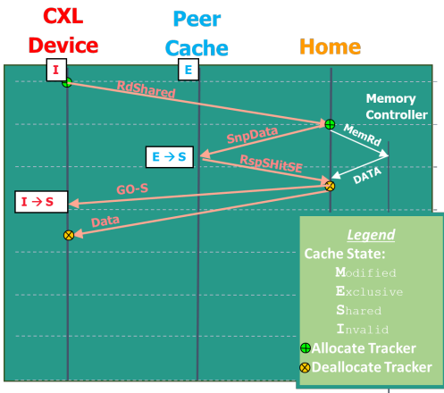
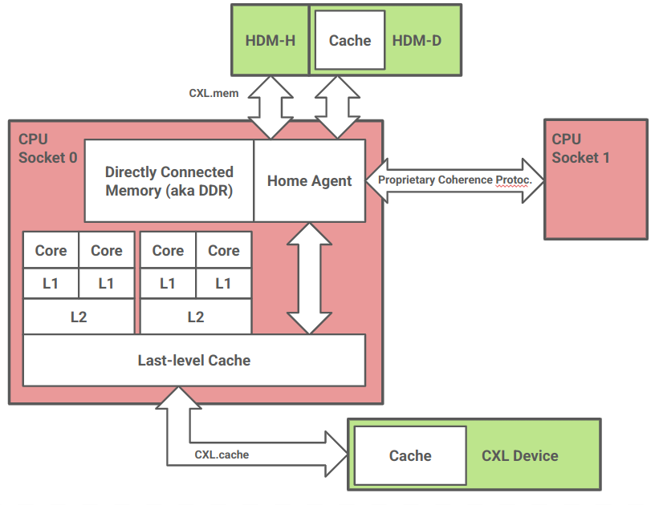

Oli's Little Guide to CXL
February 10, 2025
Oli's Little Guide to CXL
test test
breaks
I'm working on a research project about CXL (Compute Express Link) and distributed memory, so I am adding a new little guide about what CXL actually is. Hopefully in a way that you can read this in 20 minutes and understand the motivation behind it. Then, you can look up the different parts in more detail.
What is CXL?
CXL is just an open standard interconnect (created by Intel). It must be implemented at the hardware level. There are three protocols as part of this standard. (1) CXL.io (2) CXL.cache (3) CXL.mem.
In CXL we have 'CXL hosts' (or 'CPU hosts' or 'host CPUs' etc.) and 'CXL devices'. CXL lets us attach new devices to our host CPU. The devices communicate with our CPU and we communicate with the devices through CXL.
CXL Protocols
CXL.io is functionally identical to PCIe. It allows for a variety of control tasks, as well as non-coherent direct memory access (DMA).
CXL.cache allows CXL devices to access and cache (locally) memory from the CPU host.
CXL.mem allows the host CPU to access device-attached memory. This is referred to as "Host managed Device Memory" (HDM).
The latter two are special because they allow these memory operations to happen in a 'cache coherent' way.
It's All About Memory
CXL is about accessing device memory from your host CPU and vice versa. CXL is _all about memory_ Don't get any ideas that CXL is for something else.
What is Cache Coherence?
Here is a typical cache diagram:

Consider the case where CPU 1 writes some value. Upon write, the cache line is moved from main memory into its cache, then it is updated. If, before we write-through to main memory (if that is the policy of the CPU), CPU 2 decides to read the same cache line, it must know that the CPU 1 has updated it. Otherwise, there will be some inconsistency between the two caches.
This is the whole problem of cache coherence and we need a way to manage it. CXL works in a cache coherent way, whereas regular PCIe memory accesses do not. Wikipedia says this means:
In a cache coherent system, if multiple clients have a cached copy of the same region of a shared memory resource, all copies are the same.
I'm not a huge fan of this definition. Really, it should say that we have some mechanism to wait for those copies to be the same or something.
Anyway, let's look at a use case of CXL that takes advantage of this.
Use Case
We have some kind of accelerator (processor that does a certain job better than our CPU) e.g. a GPU. If a GPU wants memory at the moment, it does so with a non-coherent DMA over PCIe.
Allocate buffer in host memory
GPU makes request to the CPU
Vaddr is translated
Memory controller responds to RC
CPU responds to GPU
GPU puts memory in the right spot etc.
It would be much easier and more useful if we could just have a cache on the accelerator and do access of host memory through normal reads and writes.

In the case where the cache is never invalidated (which is the assumed case in the 'old way') there shouldn't be any speed decrease. But we probably want to access parts of the same data structure from the host or the devices. More formally (from the CXL consortium):
This poses a barrier for new usage models such as Artificial Intelligence (AI), Machine Learning (ML), and smart network interface cards (NICs) where devices seek to access parts of the same data structures simultaneously with the CPU using device-local caches without moving entire data structures back and forth.
Implementation
This section discusses possible implementation details. Unless you are implementing CXL yourself, you do not need to understand exactly how it is implemented. Therefore, this section aims to demystify such a protocol, without delving too deep.
MESI Protocol
Time for a lesson in cache coherency protocols. This is the hardware protocol that enforces that our caches are 'coherent'. A pretty common protocol is 'MESI' and it is also the one that CXL uses. Each of these four letters represents a different state that a cache line can be in. Specifically they encode two things: (1) is the cache line the same as in main memory? (if it is, we call it 'clean', otherwise it's called 'dirty') (2) Do any other caches have a copy of this?.
| Clean/Dirty | Exclusive/Shared | Name |
|:-----------:|:----------------:|:-------------:|
| Dirty | Shared | Doesn&apost exist |
| Dirty | Exclusive | Modified (M) |
| Clean | Shared | Shared (S) |
| Clean | Exclusive | Exclusive (E) |
The final state 'I' is really just a marker to say a cache line is free. It stands for 'Invalid'.
Whenever we do a read to some cache, we broadcast on some bus "hey everyone, I want to read this thing". If some other cache has that cache line in state M, it broadcasts back "wait, I already have that". Then, we can read the value from it and set both states to S. Other states result in different resolution methods. For example, if some cache wants to update the state of some data from S to M (because it writes to it), we need to invalidate all other copies.
This is just one of many possible 'snooping' designs. A snooping coherence protocol is one that works by caches broadcasting updates and other caches making sure that they snoop in on these broadcasts and make sure they update their state accordingly. The specifics don't really matter, you just need to understand that this can be achieved like this.
Our previous diagram needs to be updated to look something like this:

CXL.cache
At a high-level CXL.cache implements the MESI protocol. There are different message types that the device can send to the host and vice versa.
The device has various kinds of commands it can send. Most obvious are
Read and Write. Read allows a device to request coherence state
and data _for_ a cache line. Write is used for the device to evict
data from the device cache. For both, the host tells the device what
state is globally observed (GO) by the system.
The host can also send 'snoop's to the device to update its cache, or to read the current cache state from the device. Let's look at an example.

Here, the CXL device wants to read something and have it be in state
S, so they do RdShared. The host first snoops on a peer cache. The
peer cache is responsible for downgrading its cache line state and
sending back a message to the host telling it that it has done so.
Finally, the host reports that the cache line is globally observed as
S and sends the data. Notice how simultaneously, data is also read.
This is where we get the data from. This can be any kind of memory
controller.
These requests are (dubious source) propagated by the IMC (integrated
memory controller) on the processor of the CXL device. It's supposed to
be clever enough to figure out that it needs to translate say a mov
into a RdShared or something. From the perspective of the CXL device,
this is just a memory read with maybe a bit more latency than normal,
but all the regular pipelining mechanisms should still work. Note that
if the data is already cached, we don't need to send a RdShared and
no such request is sent. Our request never even hits the IMC of the
device, it just goes straight to device cache!
How clever. We send off our read/write, the host updates all peer caches and sends us back our data. If it's already in cache, we just read/write straight away.
CXL.mem
CXL.mem uses "host-managed device memory" (HDM). The basic form of the protocol does not allow the device to also cache the host memory. A more complicated version _does_, though.
Memory that is host-managed coherent is called HDM-H and memory that is device-managed coherent is called HDM-D. The way HDM-D is managed much in the same way as CXL.cache, in fact, certain parts of it actually do perform CXL.cache requests to the host. I don't think going through the specifics here provides much additional benefit. (Perhaps if I find a use for some of the specifics here, I will add something to the article in the future).
HDM-H exposes an additional 2-bits for each cache-line, which would have been used by the device to store cache state before. Who knows what you can do with this, but maybe something clever.
The Whole Thing
This image shows how we can use the protocols I've described earlier.

The diagram shows a multicore CPU in socket 0. It has 4 cores, each core has a unique L1 cache, each pair of cores share L2 cache. All four cores share L3 cache (LLC).
This CPU has decided to implement CXL.cache at the LLC. This is not the only possible design but makes good sense for a number of reasons. (1) CXL.cache defines host-to-device semantics, not core-to-device. (2) Implementing at a higher level cache introduces significant complexity. L1/L2 coherence is already managed by a proprietary protocol which is not CXL, so multiplexing with this protocol would be challenging. (3) If L3 is inclusive, we have to write to it anyway, so this design may not degrade performance as much as we expect. I'm just guessing on that one though.
The device connected through CXL.cache could also access host memory non-coherently over CXL.io. In this design, we pass through the same cache. Again this seems to make most sense if L3 is inclusive.
CXL.mem devices are also attached to the CPU socket behind its home agent. The home agent is supposed to maintain coherence for a certain address space. Not only do requests by cache to main DDR-attached memory pass through the home agent, it is also responsible for attaching additional CPUs through a proprietary interconnect. It is natural in this design to put CXL.mem devices behind the home agent, as this is the same location DDR-attached memory would go.